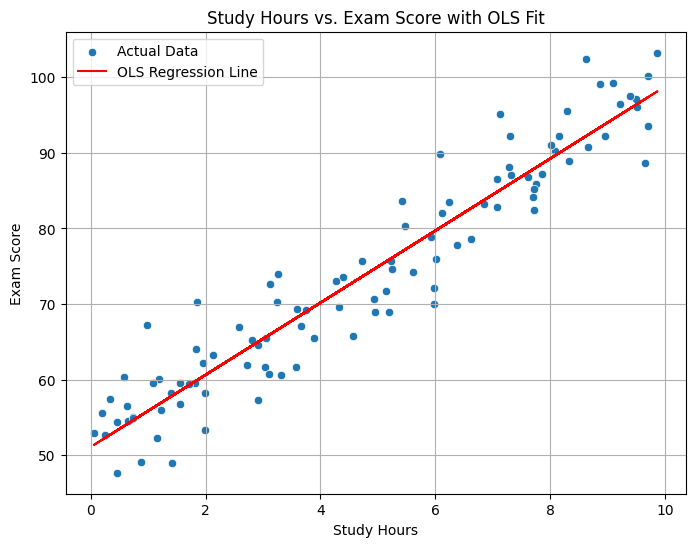

---
title: Beyond Predictions: Statistical Insights with Python's Statsmodels
author: Shawn Ding
date: 4-26-2025
categories: [Python, Data Science, Statistics, Data Analysis, statsmodels, Regression]
jupyter: python3
---In our data science journey so far, we’ve explored fantastic Python libraries like numpy for numerical operations, pandas for data manipulation, matplotlib for plotting, and scikit-learn for building machine learning models. scikit-learn is incredibly powerful for tasks like classification and regression, often focusing on how accurately our models can predict future outcomes.
But sometimes, we need more than just prediction. We want to understand the relationships within our data more deeply. How confident are we in a particular relationship? Is a variable statistically significant in explaining an outcome? This is where traditional statistical modeling shines, and Python has a dedicated library for it: statsmodels.
This post will:
- Introduce the
statsmodelslibrary and explain its purpose. - Show how it differs from
scikit-learn. - Walk through installing it.
- Demonstrate a core feature (Linear Regression - OLS) with a simple example, focusing on interpreting the statistical output.
What is statsmodels?
statsmodels is a Python library designed for estimating and interpreting statistical models. While scikit-learn provides tools primarily focused on predictive accuracy and machine learning algorithms, statsmodels excels at:
- Classical Statistical Tests: Hypothesis testing (like t-tests, ANOVA).
- In-depth Model Estimation: Providing detailed statistics about model parameters (coefficients, standard errors, p-values, confidence intervals).
- Econometrics: Many models commonly used in economics are built-in.
- Time Series Analysis: Robust tools for analyzing data points collected over time (e.g., ARIMA, VAR models).
- Generalized Linear Models (GLMs): Extending linear regression to handle different types of response variables (e.g., logistic regression for binary outcomes).
statsmodels vs. scikit-learn:
Think of it this way:
scikit-learn: Primarily focused on prediction. How well does the model perform on unseen data? It offers a wide array of algorithms (SVM, Random Forests, Neural Networks, etc.) and tools for model evaluation and selection based on predictive metrics (accuracy, precision, recall, MSE).statsmodels: Primarily focused on inference and explanation. What are the relationships between variables? How statistically significant are these relationships? It provides rich diagnostic output to help understand the model’s fit and the uncertainty around its parameters.
They are often used together! You might use scikit-learn to build the best predictive model and statsmodels to gain deeper statistical insights into the relationships driving those predictions.
Installation
Getting statsmodels is straightforward using pip. Open your terminal or command prompt and run:
pip install statsmodels pandas numpy matplotlib seaborn
**Example: Ordinary Least Squares (OLS) Regression (Markdown Cell)**
```markdown
## Example: Unpacking Relationships with Linear Regression (OLS)
Let's explore one of the most common statistical models: **Ordinary Least Squares (OLS) Linear Regression**. The goal is to model the linear relationship between one or more independent variables (predictors) and a dependent variable (outcome).
We'll use a simple synthetic dataset for clarity. Imagine we want to see how study hours (`X`) relate to exam scores (`y`).
::: {#b027704d .cell execution_count=1}
``` {.python .cell-code}
import numpy as np
import pandas as pd
import statsmodels.api as sm # Main statsmodels library
import matplotlib.pyplot as plt
import seaborn as sns
# --- 1. Create Synthetic Data ---
# Let's assume a true relationship: score = 50 + 5 * hours + random noise
np.random.seed(42) # for reproducible results
num_students = 100
study_hours = np.random.rand(num_students) * 10 # Hours between 0 and 10
noise = np.random.randn(num_students) * 5 # Random noise with std dev 5
exam_scores = 50 + 5 * study_hours + noise
# Create a Pandas DataFrame
df = pd.DataFrame({'Study_Hours': study_hours, 'Exam_Score': exam_scores})
print("Sample Data:")
print(df.head())
# --- 2. Prepare Data for statsmodels ---
# Define independent variable (predictor)
X = df['Study_Hours']
# Define dependent variable (outcome)
y = df['Exam_Score']
# *** CRITICAL STEP for statsmodels OLS ***
# Unlike scikit-learn, statsmodels doesn't automatically add an intercept (the 'b' in y = mx + b).
# We need to add a constant column to our X variable.
X_with_const = sm.add_constant(X)
print("\nIndependent variable with constant added:")
print(X_with_const.head())
# --- 3. Build and Fit the OLS Model ---
# Note the order: sm.OLS(dependent_variable, independent_variables_with_constant)
model = sm.OLS(y, X_with_const)
results = model.fit() # Fit the model to the data
# --- 4. Interpret the Results ---
# The 'results.summary()' method provides a rich statistical overview!
print("\n--- OLS Regression Results ---")
print(results.summary())
# --- 5. Visualize the Fit (Optional but Recommended) ---
plt.figure(figsize=(8, 6))
sns.scatterplot(x='Study_Hours', y='Exam_Score', data=df, label='Actual Data')
plt.plot(df['Study_Hours'], results.predict(X_with_const), color='red', label='OLS Regression Line')
plt.title('Study Hours vs. Exam Score with OLS Fit')
plt.xlabel('Study Hours')
plt.ylabel('Exam Score')
plt.legend()
plt.grid(True)
plt.show()Sample Data:
Study_Hours Exam_Score
0 3.745401 69.162241
1 9.507143 96.040679
2 7.319939 87.058501
3 5.986585 69.995080
4 1.560186 56.702573
Independent variable with constant added:
const Study_Hours
0 1.0 3.745401
1 1.0 9.507143
2 1.0 7.319939
3 1.0 5.986585
4 1.0 1.560186
--- OLS Regression Results ---
OLS Regression Results
==============================================================================
Dep. Variable: Exam_Score R-squared: 0.908
Model: OLS Adj. R-squared: 0.907
Method: Least Squares F-statistic: 968.9
Date: Sat, 26 Apr 2025 Prob (F-statistic): 1.31e-52
Time: 00:28:31 Log-Likelihood: -292.09
No. Observations: 100 AIC: 588.2
Df Residuals: 98 BIC: 593.4
Df Model: 1
Covariance Type: nonrobust
===============================================================================
coef std err t P>|t| [0.025 0.975]
-------------------------------------------------------------------------------
const 51.0755 0.851 59.988 0.000 49.386 52.765
Study_Hours 4.7701 0.153 31.127 0.000 4.466 5.074
==============================================================================
Omnibus: 0.900 Durbin-Watson: 2.285
Prob(Omnibus): 0.638 Jarque-Bera (JB): 0.808
Skew: 0.217 Prob(JB): 0.668
Kurtosis: 2.929 Cond. No. 10.7
==============================================================================
Notes:
[1] Standard Errors assume that the covariance matrix of the errors is correctly specified.
:::
Decoding the results.summary() Output
That summary table printed above is packed with information! Let’s break down some key parts:
- Dep. Variable: Shows the name of our dependent variable (
Exam_Score). - Model: Confirms we used OLS.
- R-squared: How much of the variance in the dependent variable (
Exam_Score) is explained by our independent variable (Study_Hours). A value of 0.828 means ~82.8% of the variation in scores is explained by study hours in our model. - Adj. R-squared: Similar to R-squared but adjusted for the number of predictors in the model. Useful when comparing models with different numbers of variables.
- F-statistic & Prob (F-statistic): Tests the overall significance of the model. A very small Prob (F-statistic) (like 4.44e-37) indicates that our model (as a whole) is statistically significant – study hours likely have a real relationship with scores.
- coef (Coefficients):
const: This is the estimated intercept (the ‘b’ iny = mx + b). It’s the predicted score when study hours are zero (estimated here as 50.53).Study_Hours: This is the estimated slope (the ‘m’). For each additional hour studied, the score is predicted to increase by approximately 4.94 points.
- std err (Standard Error): Measures the variability or uncertainty in our coefficient estimates. Smaller values indicate more precision.
- t (t-statistic): The coefficient divided by its standard error. Used to test if the coefficient is significantly different from zero.
- P>|t| (p-value): The probability of observing the data (or more extreme data) if the true coefficient were actually zero (i.e., if there were no real relationship).
- A small p-value (typically < 0.05) suggests we can reject the idea that the coefficient is zero. Here, both the constant and
Study_Hourshave p-values of 0.000, indicating they are highly statistically significant.
- A small p-value (typically < 0.05) suggests we can reject the idea that the coefficient is zero. Here, both the constant and
- [0.025 0.975] (Confidence Interval): We are 95% confident that the true coefficient value lies within this range. For
Study_Hours, the range is [4.461, 5.416]. Since this range doesn’t include zero, it further supports the significance of study hours.
This detailed output goes far beyond the typical prediction metrics you might get easily from scikit-learn, providing deep insights into the statistical validity and interpretation of the model’s parameters.
Beyond OLS: What Else Can statsmodels Do?
We’ve only scratched the surface with OLS. statsmodels offers a wide array of other tools, including:
- Generalized Linear Models (GLMs): For response variables that aren’t normally distributed (e.g., logistic regression for binary outcomes, Poisson regression for count data).
- Time Series Analysis: ARIMA, SARIMA, VAR, Exponential Smoothing models for forecasting and analyzing time-dependent data.
- ANOVA (Analysis of Variance): Comparing means across different groups.
- Robust Regression: Methods less sensitive to outliers.
- Nonparametric Methods: Statistical techniques that don’t assume a specific distribution for the data.
- Extensive Diagnostics: Tools to check model assumptions (like linearity, independence of errors, constant variance).
Conclusion: Adding Statistical Rigor to Your Toolkit
While scikit-learn is the go-to for building predictive machine learning models, statsmodels is an invaluable companion when you need to delve deeper into statistical relationships, hypothesis testing, and understanding the uncertainty around your model parameters.
Its detailed summary outputs provide the kind of inferential statistics crucial for research, econometrics, and situations where explaining relationships is just as important, if not more so, than predicting outcomes. If you need to answer questions about statistical significance and model fit with rigor, statsmodels is a library definitely worth exploring further in your Python data science toolkit.